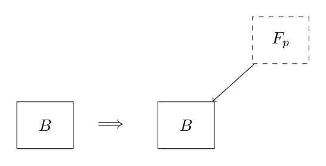
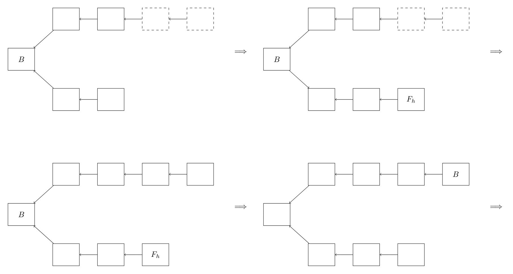
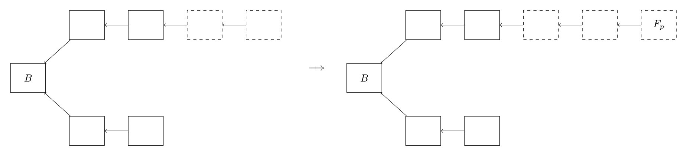

9 Selfish mining attack
In Chapter 7 we argued that the proportional allocation rule is collusion-proof in the Proof-of-Work protocol, meaning that no group of miners can increase their (expected) mining rewards by posing as one miner. That is, if a group of miners would combine their mining power in a mining pool then the expected reward that the pool gets is not more than the sum of the expected rewards that the individual miners would have gotten if they would have mined on their own.
A key assumption that is made in this reasoning1 is that we are only considering the rewards of mining one block on the blockchain. In practice, miners can participate in the mining of multiple blocks sequentially. All kinds of other strategic considerations then come into play that miners could potentially exploit to gain more expected reward from a sequence of blocks in a colluding pool than they would have gotten in expectation by mining on their own.
Furthermore, if mining in a pool is more profitable than mining by yourself, more and more miners will join a pool (which are typically “open to all”). At some point a pool might become so large that more than 50\% of all miners are in it. In this case the Proof-of-Work protocol loses its decentralized nature and the majority pool could compromise the intended functioning of the blockchain; recall from Chapter 6 that we need a majority of honest nodes to make sure the Proof-of-Work protocol functions correctly.
Informally speaking, we would like a protocol to be incentive compatible (with respect to collusion), with respect to miners whose objective is to maximize their total expected reward, meaning they have no miner has an incentive to collude with other miners in a pool (and with that obtain more reward). This term comes from the area of mechanism design, and can be seen as the reverse of game theory: Instead of designing a game and then studying its outcome, one designs the game so that it has an intended outcome. In our case the intented outcome of “the game” should be that miners do not want to collude.
The main purpose of this chapter is to show that the Proof-of-Work protocol is not incentive compatible when considering reward maximizing miners. It turns out that there exists a “block withholding” strategy, also called selfish mining attack, where the colluding pool can strategically decide not to announce a newly mined block to the chain right away, but instead secretly continue mining on a new block that could extend it (i.e., working on a secret fork of the chain). If this is done cleverly, even some minority pools are able to obtain relatively more reward than they would have gotten if all the miners in it would have mined on their own.
Theorem 9.1 (Selfish mining, informal) For any mining pool that contains at least 1/3 of the total mining power of the blockchain, running a Proof-of-Work protocol, there exists a strategy with which the pool can obtain a total expected reward that is strictly larger than 1/3 of all the rewards handed out by the protocol.
9.1 Revisiting longest chain protocol
To better understand this type of attack, let us first recall briefly the relevant notions of blockchain (e.g., Bitcoin) mining in the Proof-of-Work protocol from the Computer Science part of this course (you can also recap Chapter 5 and Chapter 6 yourself). A blockchain can be represented as a directed graph where every node has out-degree 1.
Each node represents a block containing a record of transactions that were made. To distinguish between blocks, each of them contains a unique identifier as well as the identifier of the block that it points towards, i.e., its predecessor. The root block B_0 is called the genesis block.

Miners can add a new block to the blockchain by appending it to a leaf block which is a block in the current configuration that is not a predecessor of another block. In Figure 9.1 these are B_2'', B_3' and B_4. In other words, these are the blocks at the end of a chain (or path) starting in B_0.
If a miner adds a block so that the resulting new chain is the unique longest chain of the new graph, then as a reward, they receive a unit of cryptocurrency. Adding a new block to an existing leave is only allowed if the miner is the first to solve a leave-specific cryptographic puzzle; the process of solving this puzzle is called mining. Adding a block to a chain that is not the longest eventually leads to the transactions in those blocks being ignored, i.e., not accepted, by the network (they can be resubmitted though).
Due to the fact that communication is often not 100\% instantaneous it might happen that two different miners add distinct blocks F_1 and F_2 to the current longest chain in the network (ending in B_4), creating a fork, or forking, with two branches. The block F_1 is called the head of the first branch, and F_2 the head of the second branch.
At this point, the units of cryptocurrency for adding the blocks F_1 and F_2 is not yet awarded to the respective miners that mined the blocks, because the paths leading to F_1 and F_2 are at the moment not part of the unique longest chain in the graph. Emperical evidence suggests this type of “accidental bifurcation” happens roughly once every 60 blocks.
If forking happens then all the miners active in the blockchain network can choose to continue mining on either F_1 or F_2. A miner usually mines on the first branch that they have heard of. As soon as one of the branches gets extended with an additional block (and is accepted by the network as the branch containing the longest chain in the network) the rewards of this block, as well as that of the F_i that is its predecessor, are rewarded to the miners that mined those respective blocks.
Finally, if a group of miners forms a pool, then their expected relative reward (given a configuration of the blockchain network) is the total expected number of cryptocurrency units awarded to the pool, i.e., the number of blocks that they successfully mined and added to the chain, divided by the total number of units awarded to all miners (including the pool) in the system. This latter number is precisely the length of the longest chain in the network.
9.1.1 Mining time
Recall that the probability with which a miner i is the first to solve the cryptographic puzzle (giving the right to add the newly mined block), is proportional to the amount of computation power (or hash rate) \mu_i that they put into the mining process.
Given that we are now considering the mining of multiple blocks over time, we also need a notion of time to model how long it takes for a miner to mine a block (consistent with the fact that the probability of being the first miner to solve the puzzle is proportional to the hash rate of that miner).
(A1) We assume that the time that it takes for miner i with hash rate \mu_i to solve the cryptographic puzzle is a random variable X_i that follows an exponential distribution with parameter \lambda_i = \mu_i, i.e., for x \geq 0, \mathbb{P}(X_i \leq x) = 1 - \mathrm{e}^{-\lambda_i x}.
Proposition 9.1 states that if two miners with hash rates \mu_1 and \mu_2 are trying to extend the same leaf block, then \mu_1 is the first to solve the cryptographic puzzle with probability \mu_1/(\mu_1 + \mu_2), and similarly, miner 2 is the first solve it with probability \mu_2/(\mu_1 + \mu_2).
Proposition 9.1 (Minimum of exponential random variables) If X_1 and X_2 are random variables following an exponential distribution with parameters \lambda_1 = \mu_1 and \lambda_2 = \mu_2, respectively, then \mathbb{P}(X_1 \leq X_2) = \mathbb{P}(X_1 = \min\{X_1,X_2\}) = \frac{\mu_1}{\mu_1 + \mu_2}.
Similarly, if n miners, each with an exponential distribution are trying to solve the puzzle with hash rate \mu_i for miner i, then \mathbb{P}(X_i = \min\{X_1,\dots,X_n\}) = \frac{\mu_i}{\sum_j \mu_j}. This is exactly what we wanted.
Another useful and desirable property of the exponential distribution is that it is memoryless. If a miner has already spend some time s on trying to solve the crypto puzzle, then the probability that they will solve it after time t + s, for some t, is the same as the probability that they will solve it after time t.
Proposition 9.2 (Memoryless property) If X is a random variable following an exponential distribution, then for any s,t \geq 0, \mathbb{P}(X > t + s | X > s) = \mathbb{P}(X > t).
Said differently, the fact that you have already spend some time on solving the puzzle is not going to help you to solve it quicker compared to someone who just started to work on the puzzle. This is a valid assumption because miners essentially only provide random guesses for the puzzle solution (see Chapter 6).
9.2 Warm-up example
If risk-neutral miners, whose goal is only to maximize the expected reward that they receive on the blockchain, follow the longest chain protocol and always add new blocks to the chain right after they have mined them, there is no incentive for them to form a pool if within the pool the unit reward is split proportional to the mining power of the miners participating in the pool (see the example in Section 7.3).
However, it turns out that there is an incentive for a pool to not directly reveal their newly mined block to the network, but instead secretly continue mining on a new block that could be appended to the already mined block. At this point, we assume this secret mining is possible. Under some mild assumptions we justify this assumption in Section 9.2.1.
If it would happen that in the meantime an honest node announces another new block, the pool quickly makes its secret block public as well, resulting in a forking of the longest chain, see, e.g., Figure 9.2. The justification for making this possible is the fact that accidental bifurcation is a known phenomenon, as we mentioned earlier. To emphasize the importance of this assumption, we state it below.
(A2) If a pool has a secretly mined block F_p (not yet known to miners outside of the pool) extending a leaf node B of the currently longest chain, and a miner from outside the pool announces their own new block F_h extending B, then the pool can quickly announce its secret block F_p, resulting in a forking of the longest chain.
To keep the exposition clean, we will always assume that the ensemble of miners can be divided into two groups for a given \alpha \in (0,1): A pool of colluding miners with a total hash rate of \alpha, and a group of individual (honest) miners with a total hash rate of 1 - \alpha. We sometimes say that the pool has size \alpha.
To develop some intuition about why it could be useful to withhold a block, let us consider an example (or thought experiment) in which we analyze the reward of a mining pool of size \alpha for the next two blocks that are added to the longest chain.
We will describe a strategy that the pool can follow so that their expected reward for the two newly added blocks exceeds their share \alpha of the total mining power in the network, assuming \alpha is large enough (we return to this point later). This strategy does not conflict with the Proof-of-Work protocol, as the protocol itself says nothing about when miners should announce newly found blocks; this is not relevant if miners do not care about rewards.
Suppose that both the pool and the honest miners are trying to mine a new block to append to the current longest chain with leaf (i.e., most recent) node B. We will describe a strategy that makes it beneficial (if \alpha is large enough) for the pool to withhold a newly mined block.
To describe this strategy, which is called the selfish mining attack, we make a case distinction depending on whether the honest miner or the pool mines a new block first given the currently (unique) longest chain.
In all the figures below, the top branch is always branch containing blocks mined by the pool and the bottom branch contains blocks mined by honest miners. Furthermore, blocks known to all miners are denoted with solid squares, whereas secret blocks of the pool are denoted with dashed squares.
- Case 1: An honest miner mines a block F_{h,1} extending B before the pool does. This happens with probability 1 - \alpha. In this case, both the honest miners and pool accept this block as the next block of the longest chain; recall that the pool follows the protocol except for that it might delay the announcement of a block they found themselves. The pool gets no reward.
- Case 1a: An honest miner mines a new block F_{h,2} extending F_{h,1} before the pool finds a block. This happens with probability (1-\alpha) and so overall this subcase happens with probability (1-\alpha)^2. Everyone accepts this block and again the pool gets no reward.
- Case 1b: The pool mines a block F_{p,2} extending F_{h,1}, before an honest miner does. This happens with probability \alpha, and so overall this subcase happens with probability (1-\alpha)\cdot \alpha. In this case the pool simply makes the block public and collects its unit reward.

- Case 2: The pool mines a block F_{p,1} extending B before an honest miner does. This happens with probability \alpha. In this case the strategy of the pool is to not reveal this block right away, but instead secretly start mining on a new block to extend F_{p,1} whereas the honest miners continue mining on block B.
- Case 2a: The pool mines a block F_{p,2} extending F_{p,1} before an honest extends B. Observe that honest miners don’t have the option to try and extend F_{p,1} because they are not yet aware of its existence. The probability that the pool finds F_{p,2} before the honest miners extend B is \alpha. This follows from Proposition 9.2: Although the honest miners have been mining longer on extending B than the pool has been mining on extending F_{p,1}, this does not give an advantage to the honest miners. Therefore, overall this case happens with probability \alpha^2. The pool now announces the block F_{p,1} followed quickly by the announcement of F_{p,2}. Both blocks are accepted and the pool gets two units of reward, one for F_{p,1} and one for F_{p,2}.
- Case 2b: An honest miner mines a block F_{h,1} extending B before the pool mines a block F_{p,2} extending the (secret) block F_{p,1}. This happens overall with probability \alpha(1-\alpha). The pool now quickly also announces their (until now secret) block F_{p,1}. This is possible because of Assumption A2. In this case we have a forking in the longest chain. The strategy of the pool is now to keep mining to extend F_{p,1}, whereas the honest miners can choose between extending F_{p,1} and F_{h,1}.
Assume in Case 2b that all honest miners will start mining on F_{h,1}. We will show in Exercise 9.1 that if some fraction \gamma \in [0,1] of the honest miners also mines on F_{p,1}, this can only increase the total expected reward obtained by the pool.
- Case 2b-I: An honest miner mines a block F_{h,2} extending F_{h,1} before the pool mines a block extending F_{p,1}. This happens overall with probability (\alpha(1-\alpha)) \cdot (1-\alpha) = \alpha(1-\alpha^2). Everyone accepts F_{h,2} and the pool gets no reward.
- Case 2b-II: The pool mines a block F_{p,2} extending F_{p,1} before an honest miner extends F_{h,1}. This happens overall with probability (\alpha(1-\alpha))\cdot \alpha = \alpha^2(1-\alpha). In this case, because the pool has been the only one mining on both F_{p,1} and F_{p,2} they receive a total reward of two for these blocks.
Taken altogether, the pool receives one unit of reward in Case 1b with probability \alpha(1-\alpha), two units of reward in Case 2a with probability \alpha^2, and two units of reward in Case 2b-II with probability \alpha^2(1-\alpha). That is, the total expected reward of this selfish mining attack is 1 \cdot \alpha(1-\alpha) + 2 \cdot \alpha^2 + 2 \cdot \alpha^2(1-\alpha) = -2\alpha^3 + 3\alpha^2 + \alpha Given that 2 units of cryptocurrency were handed out, the expected relative reward of the pool is (-2\alpha^3 + 3\alpha^2 + \alpha)/2. Elementary calculus shows that \frac{-2\alpha^3 + 3\alpha^2 + \alpha}{2} > \alpha if and only if \alpha > 0.5. This means that the selfish mining attack is profitable for a group of colluding miners that form a majority in the system!
Although collusion has been observed in practice, the assumption that there is a majority of miners that colludes from the start is unrealistic. In fact, the desirable guarantees that we have seen for the Proof-of-Work protocol rely on the fact that at least half of the nodes are honest, i.e, \alpha < 0.5. Otherwise, the network is subject to all other kinds of manipulation (that might be way worse than simply withholding newly mined blocks for some time).
Very suprisingly though, it turns out that a more elaborate analysis of the selfish mining attack (not restricted to the addition of two new blocks) shows that even minority pools can profit from such an attack and obtain more reward than they would have gotten individually! In particular, we will show that also a pool of size 1/3 < \alpha < 1/2 can carry out a selfish mining attack and obtain a reward that is relatively more than \alpha.
Let \gamma \in (0,1) and suppose that after the pool announces its secret block F_{p,1} in Case 2b, a fraction \gamma of the honest miners starts mining to extend F_{p,1} and a fraction (1-\gamma) of the honest miners starts mining to extend F_{h,1}.
By redoing the case analysis starting from the final situation in Case 2b, show that the expected contribution of the subsequent cases to the total expected reward for the pool is 2\alpha^2(1-\alpha) + \alpha(1-\alpha)^2 \cdot \gamma. Not all cases give a nonzero reward for the pool, but work out all (three) of them for completeness. Note that if an honest miner ends up extending F_{p,1} with a block F_{h,2}, then the pool gets no reward for this latter block, but it does get the reward for the block F_{p,1}, as the branch containing F_{p,1} and F_{h,2} is now part of the new longest chain.
9.2.1 Secret mining details
To understand how secretly trying to extend a secret block works from a technical perspective, let us recall the basics of mining. The idea is that we are given a function h, that takes as input a “guess” z and outputs h(z), and a difficulty level \tau. If h(z) \leq \tau, then z is a solution to the crypto puzzle and a miner can use this solution to obtain the right to add a block to the blockchain.
A solution z is the concatenation of four parts (see Definition 6.2 for the full structure of z), the most important for us being that z specifies which predecessor block the solution z is trying to extend. In secret mining this part of the solution is simply the last secretly mined block of the pool that has not been announced publicly.
Recall that the function h never changes in the Proof-of-Work protocol, i.e., it is fixed in the blockchain software, but the difficulty level \tau is updated periodically, to keep the expected interval between mined blocks the same (this is done roughly every two weeks). In this chapter we assume that, while the pool is carrying out a selfish mining attack, the difficulty level \tau does not change. Otherwise, it might be that already secretly mined blocks become invalid as a result of \tau being lowered (if \tau would be increased, this is not problematic with respect to secret mining).
9.3 General case
We continue with the general description of the selfish mining attack. It essentially follows the example with the difference being Case 2a (explained below). If the pool is the first to mine a block extending leaf node B, they keep it secret. If the honest miners mine a block, and the pool has a secret block, they announce it right away to create a forking. If then the pool is the first to mine a second block, they announce this as well so that their chain of two blocks is the new longest chain and their last block becomes the new leaf node B.
(A3) We assume an honest miner never tries to extend a block mined by the pool in case of a forking consisting of two branches of equal length. Similar as in Exercise 9.1, in the final reward analysis that we do in Section 9.3.5, if honest miners would also try to extend a block mined by the pool, this can only increase the expected reward of the pool.
In Case 2a, when the pool has mined both the secret blocks F_{p,1} and F_{p,2}, it releases them both and collects a reward for both of them. Instead of doing this, the pool could also have simply kept mining to get a longer private/pool branch (a branch that contains some blocks only known to the pool).
Of course, we have to take into account that honest miners might also find a block in the meantime, which they could use to extend B. An extension of B using such a block of an honest miner is called an extension into the public branch.
Roughly speaking, the core idea of the selfish mining attack is that the pool keeps trying to extend their pool branch and in this way stay in the lead with respect to the public branch. As an example, suppose that (although probabilistically unlikely) the pool mines five blocks for the pool branch, and keeps all these secret, before an honest miner mines a first block for the public branch. Next, suppose an honest miner finds a block to extend B that they add to the public branch. To make sure the pool branch becomes the longest branch in the long run, the pool right away must make public their first block mined in the secret pool branch to create a fork in the publicly known network. This block we now refer to as the publicly known part of the pool branch.
If the pool waits with making public their secret block, the honest miners will agree on the first block of the public branch being added to the longest chain, after which the secret block(s) of the pool becomes useless.
The secret part of the pool branch are the remaining four secret blocks. The pool can keep mining on the last block of the secret part of the pool branch with the hope of extending it. Whenever an honest miner mines a block to extend the public branch, the pool right away also releases a next block to extend the public part of the pool branch. In this way, the public part of the pool branch (known to both the pool and all honest miners) always stays as long as the public branch.
If at some point the difference in length between the total pool branch and the public branch becomes one block, the selfish mining strategy prescribes to also announce the last secret block of the pool branch right away, at which point the publicly known part of the pool branch (which is now the complete pool branch) is one block longer than the public branch and therefore the unique longest chain. In Figure 9.11 this would happen if the honest miners mine two additional blocks for the public branch, before the pool manages to extend the pool branch. The pool now receives one unit of reward for every block that is on the pool branch, which is now fully publicly known; in Figure 9.11 the pool would receive 5 units of reward. Intuitively, if the difference becomes equal to one, the pool doesn’t want to risk losing its advantage over the public branch and therefore announces their last block to secure the rewards of all blocks on the pool branch.
At this point, the process starts again, i.e., the pool tries to get a secret lead of two or more blocks starting in the last node of the previously pool branch. This node is now the new leaf node; in Figure 9.11 this is the right-most block of the pool branch. Whenever the difference between the pool and public branch drops down to one block, the pool releases its last secretly mined block of the new pool branch. The process then again repeats, etc.
9.3.1 Pseudo-code
We next provide the pseudo-code for the above description. To understand this code correctly it is important to realize that the only time that the public branch becomes longer than the pool branch, is when both have length 0 (or both length 1) and the honest miners are the first to find a block.
We also emphasize once more that, assuming the public part of the pool branch (its first, say, k nodes) has length at least one, this part is never shorter than the public branch (apart from the negligible time interval where the honest miners have announced a new block and the pool responds to this by making one of its secret blocks public).
Finally, recall that if both the public branch and the public part of the pool branch have equal length, then all honest miners are mining on the public branch, as stated in Assumption A3. Just as in the warm-up example, if some honest miners would also branch on the publicly known pool branch, this can only increase the overall expected reward that the pool obtains in the end.
In the pseudocode below, we write length(public) for the number of blocks in the public branch at a given point in time, and length(pool) for the total number of blocks (both secret and public) in the pool branch.
Initialization:
- Leaf node B of unique longest chain
- Emptpy (full) pool branch; Empty public branch
If pool finds a new block F_p:
If length(public) = 1 and length(pool) = 1:
# Forking in which both blocks are public (Case 2b-II)
- Append F_p to pool branch as public block
- F_p becomes the new leaf node B (= pools wins)
- Public and pool branch are set to be empty
Else:
- Append F_p to pool branch as a secret block
If honest miner finds a new block F_h for public branch:
Append F_h to public branch
If length(pool) = 0: # Case 1
- F_h becomes the new leaf node B (= honest miner wins)
- Public branch is set to be empty
Else if length(pool) = 1 and length(public) = 1:
# Case 2b; pool branch's block was secret until now
- Pool branch directly makes secret block public
# Public part of pool and public branch now have length 1
Else if length(pool) = 1 and length(public) = 2:
# Case 2b-II; pool branch's block was already public
- F_h becomes the new leaf node B (= honest miner wins)
- Public and pool branch set to be empty
Else if length(pool) - length(public) = 1
# All but two last blocks of pool branch are then public
- Pool announces last two secret blocks (= pool wins)
- Last secret block becomes the new leaf node B
- Public and pool branch set to be empty
Else if length(pool) - length(public) = d > 1
# Last d + 1 blocks of pool branch are then secret
- Pool makes oldest secret block public in pool branch
# Pool is guaranteed to eventually win this blockBelow is also the pseudo-code without comments.
Initialization:
- Leaf node B of unique longest chain
- Emptpy (full) pool branch; Empty public branch
If pool finds a new block F_p:
If length(public) = 1 and length(pool) = 1:
- Append F_p to pool branch as public block
- F_p becomes the new leaf node B (= pools wins)
- Public and pool branch are set to be empty
Else:
- Append F_p to pool branch as a secret block
If honest miner finds a new block F_h for public branch:
Append F_h to public branch
If length(pool) = 0:
- F_h becomes the new leaf node B (= honest miner wins)
- Public branch is set to be empty
Else if length(pool) = 1 and length(public) = 1:
- Pool branch directly makes secret block public
Else if length(pool) = 1 and length(public) = 2:
- F_h becomes the new leaf node B (= honest miner wins)
- Public and pool branch set to be empty
Else if length(pool branch) - length(public branch) = 1
- Pool announces last two secret blocks (= pool wins)
- Last secret block becomes the new leaf node B
- Public and pool branch set to be empty
Else if length(pool branch) - length(public branch) = d > 1
- Pool makes oldest secret block public in pool branchSuppose that blocks are mined sequentially according to the sequence (H,P,P,H,P,P,P,H,P,H) starting from an initial (genesis) block B. An H means that the honest miners found a block, and a P means that the pool found a block.
Carry out the pseudo-code above and give the final state of the blockchain (including secret blocks, if any) for this sequence of mined blocks. Label every block with an H or P, denote public blocks with a solid square, and denote secret blocks with a dashed square (as in, e.g., Figure 9.11).
Repeat Exercise 9.2, but now for the sequence (P,P,P,H,P,H,H,H,P,H,H). How many units of reward has the pool received in this sequence (if any secret blocks remain, do not take these into account)?
Feel free to write down a self-chosen sequence, as in Exercises 9.2 and 9.3, and execute the pseudocode.
Explain that at no point in the selfish mining attack both the (full) public branch and the pool branch consist of two blocks (regardless of which blocks in the pool branch are public or secret).
Observe that the same reasoning shows that at no point the public and pool branch both consist of d \geq 2 blocks.
Explain that after the honest miners have announced a newly found block F_h to their public branch, but right before the pool has responded to this:
- if
length(pool) - length(public) = 1, then it must be that precisely the last two blocks of the pool branch are still secret. - if
length(pool) - length(public) = d > 1, then it must be that the last d+1 bloks of the pool branch are still secret.
It turns out there is a convenient way to represent the selfish mining process using a Markov chain \mathcal{M} = (S,P). A Markov chain consists of a state space S and a transition matrix P \in [0,1]^{S \times S} that describes the probabilities with which we move from one state to another.
9.3.2 State space
In our case the states will be the difference between the length of the (full) pool branch and the public branch. This difference is precisely the number of secret blocks that the pool branch still has. Therefore our state space is \mathbb{N}_0 = \{0,1,2,3,\dots\}.
Looking at the pseudo-code, there is one special case, which is when the difference is 0. The selfish mining attack makes different choices depending on whether both the public and pool branch have length 0, or when they both have length 1 (in which case the block of the pool branch is public). Recall from Exercise 9.2 that it cannot happen that both branches have a length of d \geq 2.
Therefore, we split the state 0 into two states: 0 and 0'. The state 0 corresponds to the setting where both branches have length 0, and 0' correspond to the case where both branches have length 1 (i.e., the start of the fork). Overall our state space then becomes S = \{0,0',1,2,3,\dots\}. Also note that if the difference is 1, and both the pool and the honest miners are mining, this can only happen when the public branch has length 0 and the pool branch has length 1 (with one secret block). In all other cases, a situation with a difference of 1 would result in the public branch becoming part of the new longest chain, or the pool branch becoming part of the new longest chain.
9.3.3 Transition probabilities
The transition probabilities in the matrix P are drawn in the figure below.
Note that for every node, the sum of its outgoing edges equals 1. We will next explain the transition probabilities.
Similar as before, in all the figures below, the top branch is always the pool branch, and the bottom branch is the public branch. Furthermore, publicly known blocks (on the public branch or the public part of the pool branch) are denoted with solid squares, whereas secret blocks on the pool branch are denoted with dashed squares.
- State 0: Both the pool and the public branch have length 0.
- If honest miners find a block F_h first, which happens with probability 1 - \alpha, it is added to the public branch. The public branch becomes part of the longest chain and the process then restarts with F_h being the new leaf node B. We therfore start again with a public and pool branch of length 0 and so do not move in the state space.

Figure 9.14: Honest miner finds block first in state 0 If the pool find a block F_p first, which happens with probability \alpha, the pool branch becomes one block (which is secret) longer than the public branch so we move to state 1.
Figure 9.15: Pool finds block first in state 0; F_p stays secret for now (hence, dashed)
- State 0': Both pool and publich branch have length 1.
If honest miners find a block first, which happens with probability 1 - \alpha, the public branch becomes part of the longest chain, and the process restarts.

Figure 9.16: Honest miner finds block first in state 0'. If the pool finds a block first, which happens with probability \alpha, the pool branch becomes part of the longest chain, and the process restarts.
Figure 9.17: Pool finds block first in state 0'.
Since the process restarts in both cases here, with an empty pool and public branch, we move to state 0 with probability \alpha + 1 - \alpha = 1.
- State 2: The pool branch is two (secret) blocks longer than the public branch.
If honest miners find a block first, which happens with probability 1 - \alpha, the pool right away announces their two secret blocks so that the pool branch becomes part of longest chain. The process now restarts so we move to state 0.
Figure 9.18: Honest miners find block first in state 2. In this example the pool branch started out with four blocks of which the first two were public and the last two secret (hence, dashed). If the pool finds a block first, which happens with probability \alpha, we add it to the pool branch as a secret block and so the pool branch becomes three (secret) blocks longer than the public branch (which are the last three blocks). We therefore move to state 3.
Figure 9.19: Pool finds block first in state 2, so we now move to state 3.
Before reading along, explain the transition probabilities for states 1 and 3,4,\dots using similar descriptions and figures as above.
- State 1: The pool branch consists of one secret block.
If honest miners find a block first, which happens with probability 1 - \alpha, the pool right away makes there secret block public to create a fork in the publicly known network. In this case we move to state 0'.
Figure 9.20: Honest miners find a block first in state 1. If the pool finds a block first, which happens with probability \alpha, we add it to the pool branch as a secret block and so the pool branch now consists of two secret blocks.

Figure 9.21: Pool finds block first in state 1, so we now move to state 2.
- State d \geq 3: The pool branch is d (secret) blocks longer than the public branch.
If honest miners find a block first, which happens with probability 1 - \alpha, the pool right away makes the left most secret block of the pool branch public, so that its public part is as long as the publich branch. Since we now have one secret block less, we move to state d-1.
Figure 9.22: Honest miners find a block first in state d = 3. In this example the length of the pool branch is 4 and that of the public branch 1 (so that the difference is three). It could also have been the case, e.g., that the public branch had length 3 and the pool branch length 6 (again so that the difference would have been 3). If the pool finds a block first, which happens with probability \alpha, we add it to the pool branch as a secret block and so the pool branch now consists of d+1 secret blocks.
9.3.4 Stationary distribution
Assume we start in state 0, with B being the genesis block of the blockchain. We would like to compute the stationary probabilities \pi_i of every state i. That is, given that we have performed enough probabilistic transitions, what is the probability that we are in state i of the state space? It turns out that this question only has a valid answer if 0 < \alpha < 1/2, so we will make this assumption from now on (recall that we already saw in the warm-up example that pools of size \alpha > 1/2 can obtain more reward when using a type of selfish mining attack).
The (row) vector \pi = (\pi_{0'},\pi_0,\pi_1,\pi_2,\dots) is called the stationary distribution of the Markov chain. It can be computed by solving the (infinite) system of equations \pi P = \pi, where P is the transition matrix, whose entries P_{ij} or transitioning from state i to j are given in Figure 9.23. For example, for state i \geq 3, the i-th row of the system \pi P = \pi reads \alpha \pi_{i-1} + (1-\alpha) \pi_{i+1} = \pi_i
Write down the equations in \pi P = \pi for states i \in \{0',0, 1, 2\}.
Show that for 0 < \alpha < 1/2, the row vector \pi = (\pi_{0'},\pi_0,\pi_1,\pi_2,\dots) given by \left\{ \begin{array}{ll} \pi_{0'} = \displaystyle \frac{(1-\alpha)(\alpha - 2\alpha^2)}{1 - 4\alpha^2 + 2\alpha^3} & \\[3ex] \pi_{0} = \displaystyle \frac{\alpha - 2\alpha^2}{\alpha(1 - 4\alpha^2 + 2\alpha^3)} & \\[3ex] \pi_{i} = \displaystyle \left(\frac{\alpha}{1-\alpha}\right)^{i-1} \frac{\alpha - 2\alpha^2}{1 - 4\alpha^2 + 2\alpha^3} & \forall i \geq 1 \end{array} \right. is the stationary distribution solving \pi P = \pi by verifying that \pi satisfies the equations from Exercise 9.7, and the equations \alpha p_{i-1} + (1-\alpha) p_{i+1} = p_i for i \geq 3.
Also show that \pi is indeed a probability distribution, by showing that \pi_{0'} + \sum_{i=0}^\infty \pi_i = 1 and \pi_i \geq 0 for all i.
Alternatively, you can also try the more challenging problem of solving from scratch the system \pi P = \pi, \pi_{0'} + \sum_{i=0}^\infty \pi_i = 1.
9.3.5 Reward analysis
To determine the reward of the pool when using the selfish mining attack, we extend the Markov chain description with the notion of rewards. Given that we move from a state i \in \{0',0,1,2,\dots\} to some other state, we can compute the expected rewards associated with moving away from i.
If we multiply these rewards with the stationary probabilities of every state, we obtain the expected overall reward per block from the selfish mining strategy in the long run. In mathematical terms, we turn our Markov chain into a Markov Decision Process (MDP) by introducing a reward associated to every transition.
We will next consider all the states and their associated awards.
State 0'. Recall that in this state there is a forking in which both the pool and public branch have length 1. If the honest miners manage to mine a block first extending the public branch they receive a reward of 2. This happens with probability 1-\alpha and so their expected reward is 2(1-\alpha). If the pool manages to mine a block first extending the pool branch, they obtain a reward of 2. This happens with probability \alpha, and so the expected reward when transition away from state 0' is 2\alpha.
State 0. In this case both the public and pool branch are empty. If the honest miners mine a block first, they obtain a reward of one, and so an expected reward of 1 \cdot (1-\alpha). If the pool mines a block first, they keep it secret, and so no rewards are (yet) handed out to the pool when transitioning away from this state.
State 1. In this case the the pool has one secret block. If the pool manages to mine a block first, this is kept secret as well, and so no reward is handed out. If the honest miners mine a block first, the pool announces its secret block, thereby creating a forking. Also then, no rewards are handed out.
We purposely skip state 2 at this point, and first discuss state i \geq 3.
State i \geq 3. If the pool is the first to mine a new block, then we transition to state i+1, with one more secret block, and no reward is handed out. If the honest miners are the first to mine a new block, the pool makes its oldest secret block public. Because the pool has a lead of more than two blocks on the honest miners (i.e., the pool branch is at least two blocks longer than the public branch), we know that eventually, once the difference in length of the branches drops down to one, the pool will get the reward for this block. Therefore, we count the reward for the secret block that was made public in this transition.
State 2. If the pool is the first to mine a new block, we transition to state 3, with one more secret block, and no reward is handed out. If the honest miners mine a block first, the pool makes its last two secret blocks public, and collects the rewards of all the blocks in the pool branch (recall that being in state 2 means that the difference in length between the pool and public branch is two secret blocks; the state does not specify how long the public parts of these branches are). Recall that we already counted the rewards of all the earlier (secret) blocks that were made public in states i \geq 3 (previous caes), and so here we only count the rewards for the last two secret blocks that were made public in this transition. Since the honest miners are the first to mine a block with probability 1-\alpha, the expected reward of the pool here is 2(1-\alpha).
To summarize the last two cases, we count the reward of a block in the pool branch at the moment it is made public. Below we have given a summary of the rewards obtained by the pool and the honest miners per state.
This means that in stationarity, the overall expected reward of the poolper block is equal to \begin{array}{ll} r_{\text{pool}} & = \displaystyle \pi_{0'} \cdot r_{\text{pool}}^{0'}+ \sum_{i=1}^\infty \pi_i \cdot r_{\text{pool}}^i \\ & = \displaystyle \pi_{0'} \cdot 2\alpha + \pi_2 \cdot 2(1-\alpha) + \left( \sum_{i=3}^\infty \pi_i \right) \cdot (1-\alpha) \end{array} and that of the honest miners is r_{\text{honest}} = \pi_{0'} \cdot r_{\text{honest}}^{0'}+ \sum_{i=1}^\infty \pi_i \cdot r_{\text{honest}}^i = \pi_{0'} \cdot 2(1-\alpha) + \pi_0 \cdot (1-\alpha).
It can be shown that r_{\text{pool}} + r_{\text{honest}} < 1, which intuitively follows from the fact that because of possible forkings, the protocol will not hand out a unit reward for every mined block.
To compute the share of the rewards that the pool gets, we want to compute the expected relative reward of the pool, which is R_{\text{pool}} = \frac{r_{\text{pool}}}{r_{\text{pool}} + r_{\text{honest}}}.
Show that R_{\text{pool}} = R_{\text{pool}}(\alpha) = \frac{4\alpha^2 - 9\alpha^3 + 4\alpha^4}{1 - \alpha - 2\alpha^2 + \alpha^3}
On the domain (0,\frac{1}{2}), the expression in Exercise 9.8 is greater then \alpha if and only if \frac{1}{3} < \alpha < \frac{1}{2}, as Figure 9.25 shows.
This leads us to the main theorem, showing that indeed also minority pools of size at least 1/3 can benefit from selfish mining.
Theorem 9.2 (Selfish mining) For any mining pool of size 0 < \alpha < \frac{1}{2}, the expected relative reward of the selfish mining strategy is \frac{4\alpha^2 - 9\alpha^3 + 4\alpha^4}{1 - \alpha - 2\alpha^2 + \alpha^3}. The above quantity is greater than \alpha, the expected relative reward when the pool also mines honestly, if and only if \frac{1}{3} < \alpha < \frac{1}{2}.
9.4 Acknowledgements
This section is based on the paper Majority is not Enough: Bitcoin Mining is Vulnerable by Eyal and Sirer (2013).
Apart from ignoring other considerations such as risk aversion.↩︎